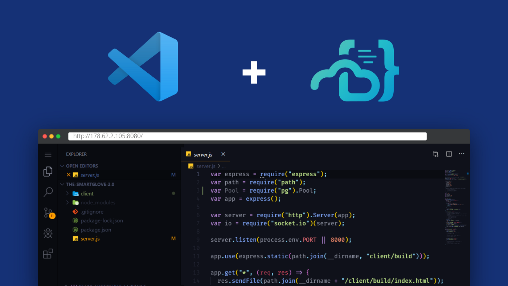

docker run -d \
--name=code-server \
-e PASSWORD=password `#optional` \
-e SUDO_PASSWORD=password `#optional` \
-e SUDO_PASSWORD_HASH= `#optional` \
-e PROXY_DOMAIN=localhost `#optional` \
-p 8443:8443 \
lscr.io/linuxserver/code-server:latest
or
docker run -d -p 8443:8443 -v /scm:/scm codercom/code-server:1.621 --allow-http --no-auth
docker run \
-v ${{ github.workspace }}:/srv/jekyll -v ${{ github.workspace }}/_site:/srv/jekyll/_site \
jekyll/builder:latest /bin/bash -c "chmod -R 777 /srv/jekyll && jekyll build --future"apt update
apt install nginxwget https://github.com/cdr/code-server/releases/download/3.2.0/code-server-3.2.0-linux-x86_64.tar.gz
tar -xzvf code-server-3.2.0-linux-x86_64.tar.gz
sudo cp -r code-server-3.2.0-linux-x86_64 /usr/lib/code-server
sudo ln -s /usr/lib/code-server/code-server /usr/bin/code-server
sudo mkdir /var/lib/code-serversudo vi /lib/systemd/system/code-server.service
[Unit]
Description=code-server
After=nginx.service
[Service]
Type=simple
Environment=PASSWORD=Lab0815!
ExecStart=/usr/bin/code-server --bind-addr 127.0.0.1:8080 --user-data-dir /var/lib/code-server --auth password
Restart=always
[Install]
WantedBy=multi-user.targetsudo systemctl start code-server
sudo systemctl status code-server
sudo systemctl enable code-serversudo vi /etc/nginx/sites-available/code-server.conf
server {
listen 80;
listen [::]:80;
server_name julianwe.github.io;
location / {
proxy_pass http://localhost:8080/;
proxy_set_header Upgrade $http_upgrade;
proxy_set_header Connection upgrade;
proxy_set_header Accept-Encoding gzip;
}
}sudo ln -s /etc/nginx/sites-available/code-server.conf /etc/nginx/sites-enabled/code-server.conf
sudo nginx -t
sudo systemctl restart nginxor install coder:
# First, install Coder
curl -L https://coder.com/install.sh | sh
# Start the Coder server (caches data in ~/.cache/coder)
coder server
# Navigate to http://localhost:3000 to create your initial user
# Create a Docker template, and provision a workspace